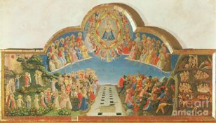

v. 1431
1 — Le Jugement dernier
À regarder
Le Christ au centre, les tombeaux ouverts, les élus qui avancent vers le Paradis et les damnés entraînés vers l'Enfer. Repérer la ronde des bienheureux et des anges.
Le Christ au centre, les tombeaux ouverts, les élus qui avancent vers le Paradis et les damnés entraînés vers l'Enfer. Repérer la ronde des bienheureux et des anges.
À comprendre
La structure reste largement médiévale — hiérarchie, symétrie, Paradis et Enfer — mais l'espace gagne en profondeur et les corps en volume.
La structure reste largement médiévale — hiérarchie, symétrie, Paradis et Enfer — mais l'espace gagne en profondeur et les corps en volume.